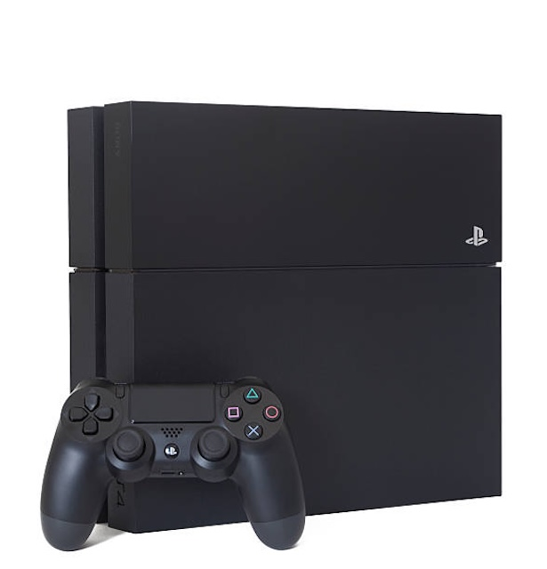
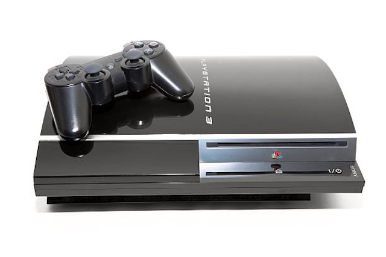
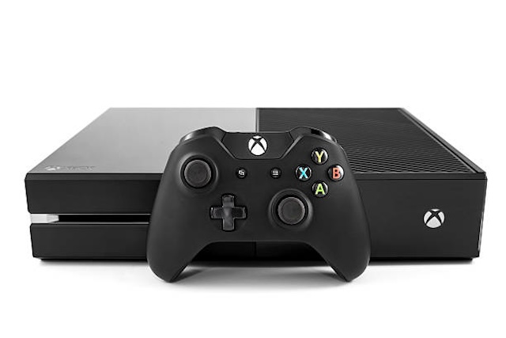
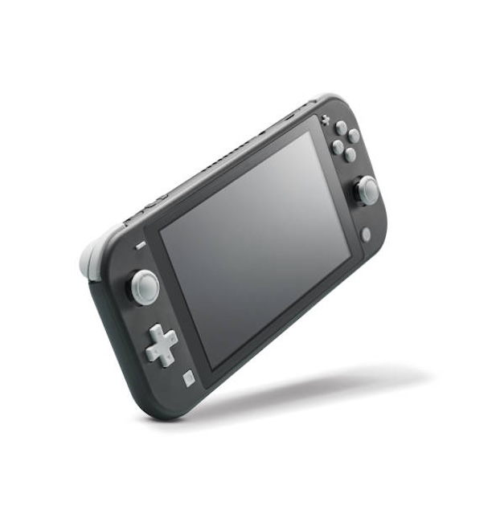

- PlayStation Vita
- PlayStation 3
- Xbox One
- PlayStation 4 
- Nintendo Switch

The PlayStation Vita is often considered a lesser version of it's predecessor, the PlayStation Portable. I consider this console to be the best because of its amazing catalogue and huge potential for a gamer. The console has many games that are exclusive to this small device as well as some games that were only ported to the Nintendo Switch many years after. It also has games from the PlayStation 4 catalogue, and the best of all is that it is all in a small devide that can fit right into your pocket. The modding capabilities are also impressive for such a compact device and was truly ahead of it's time.

The reason to why the PlayStation 3 is so high up this list is probably because of it's nostalgic factor. This was the first console I ever had apart from a Nintendo DS and I was amazed by what this console could do. When compared to the graphics I was used to at the time, this console was miles ahead. I have many memories with this console including playing Call of Duty: Modern Warfare and many other games that still somewhat stand the test of time

The Xbox One comes i third place because of it's great catalogue and superior capability and performance than its sister console, the PlayStation 4. This console had great exclusive titles as well as backwards compatibility with some amazing Xbox 360 games. This console also happens to have my favorite controller of all time, there is something about it's design that makes it extremly comfortable and fun to use. I still make use of the controller after 10 even if it's on a PC
The PlayStation 4 was my second console right after the PlayStation 3 and I was amazed by this console, just not as much as the PlayStation 3. I think this console has the best exclusives on any console yet fell behind in ergonomics for me. With this said, it is still an amazing console that has some of my all-time favorite games on it.

The last console on this list is the Nintendo Switch, not because it was bad but because it was simply the least interesting visually to me. I also really dislike the Joy-Cons since stick drifting is very ccommon for this console. The saving point for this console is how it can be many things with a single device as well as it's huge catalogue of games.